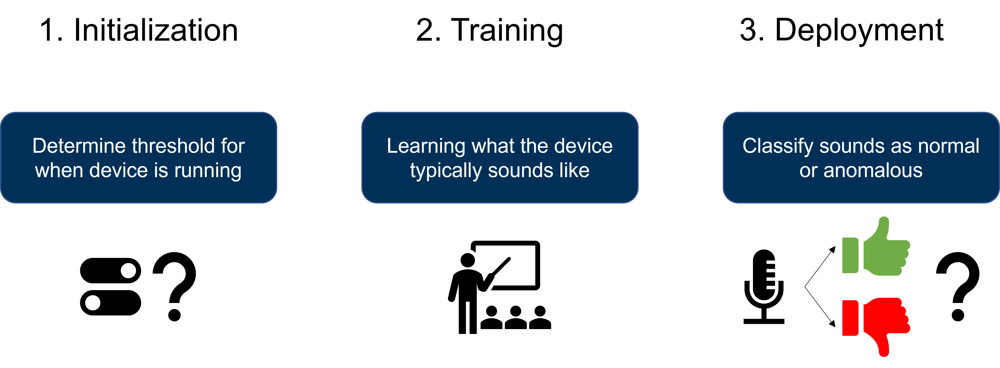
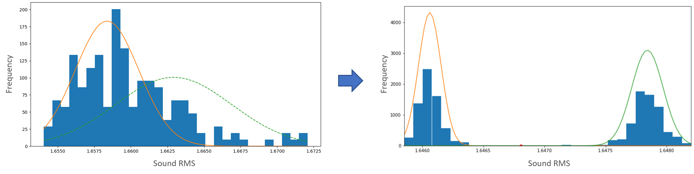
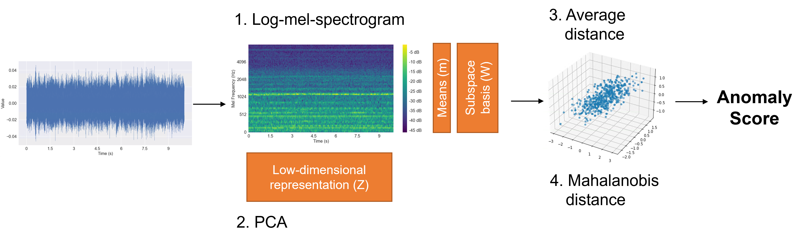
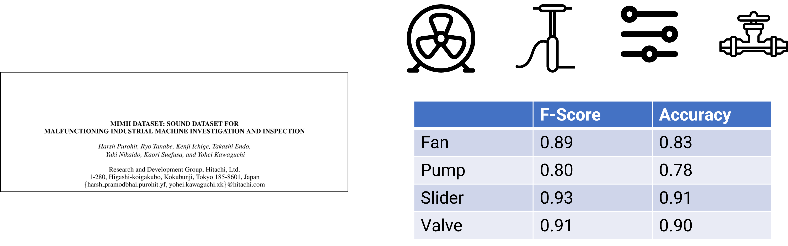
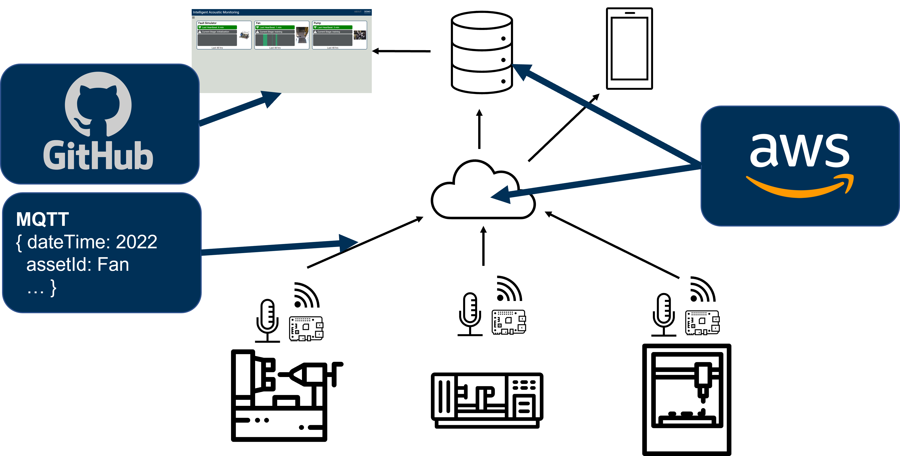

This project was sponsored by the Center for the Development and Application of Internet of Things Technologies (CDAIT) as part of the 2022 Student IoT Innovation Capacity Building Challenge. For more information please visit the website here.
We are an interdisciplinary group from Georgia Tech. To connect with us click on our picture below.
The goal of our project was to develop a low-cost system which can autonomously learn the typical behavior of a machine and alert users when anomalies occur.
Why do we want to do this? The IIoT offers manufacturers vast benefits and is projected to result in tens of billions of dollars in improved profits for manufacturers. However, manufacturers do not know how to make use of the data they collect so much of the data is not used.
Our developed application is provides a low-cost, easy to implement solution so that manufacturers of all sizes can rapidly deploy smart edge devices and begin getting actionable insights into industrial processes out-of-the-box with minimal investment in time and money.
To acheive this, we developed an application that is deployed in three stages. In the final deployment stage, the application classifies sounds as normal or anomalous, but before it can get there it first goes through an initialization and training phase.
In the initialization stage, a Gaussian Mixture Model with two gaussians is used to determine the threshold that distinguishes between the off and on states. The means of each distribution are compared to ensure distinct states are found.
The typical sound from a machine is then learned using a principal components analysis (PCA) based approach which has been proven in past research to be successful at classifying anomalous sounds. In this process, the log-mel-spectrogram of the raw sound data is computed and PCA is performed on the spectrogram. After performing PCA, the distance from each component to the average of the training data is computed resulting in a point in a 3-dimensional space. Finally, the mahalanobis distance is computed in to get the anomaly score.
We tested the process using the MIMII dataset which contains sound data for malfunction machines. The dataset has devices in 4 categories including fans, pumps, sliders, and valves. The classification resulted in an f-score of at least 80 in all categories.
To support the application, we built a cloud architecture which uses MQTT to transmit status and alert messaged from the edge devices. All messages are stored in a SQL database, and in the case of alarms can be optionally sent directly to users. Amazon Web Services is used for the orchestration of cloud services and data storage. Finally, a made a prototype user dashboard using github pages. A demonstration is available on this webpage by going to the Demo tab of clicking here.
This work lays the groundwork for a low-cost, easy to implement anomaly detection device that can be used by manufacturers or all sizes, but there are several next steps to improve the application and make it more commercially viable. These include:
For more information about our project, please check out our recorded presentation or read our full report.